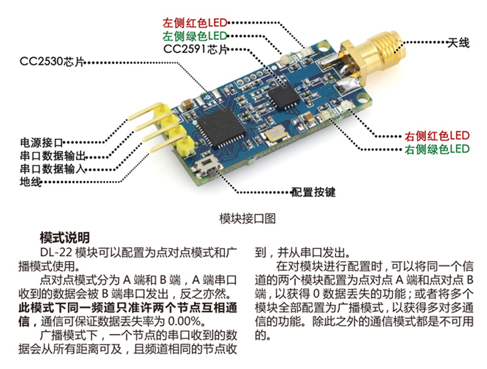
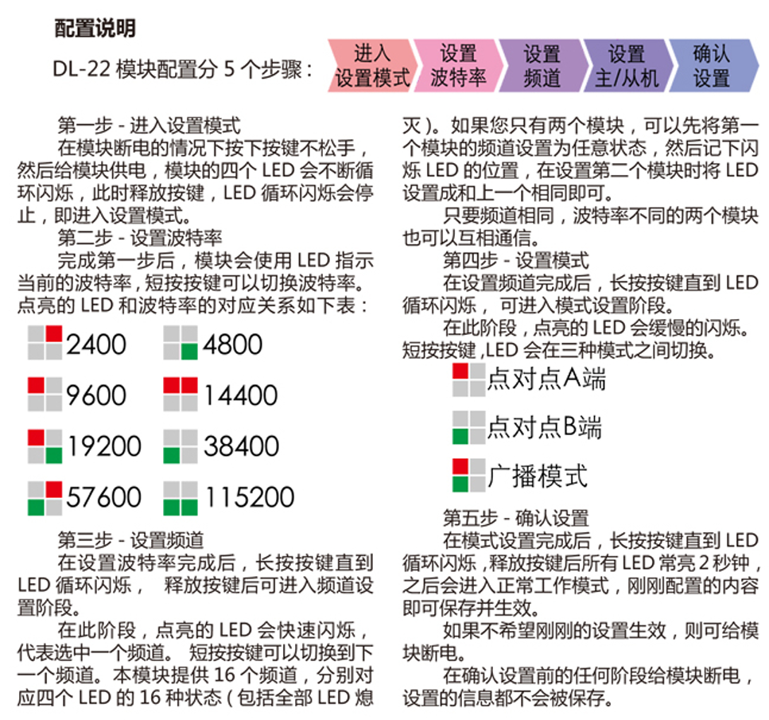
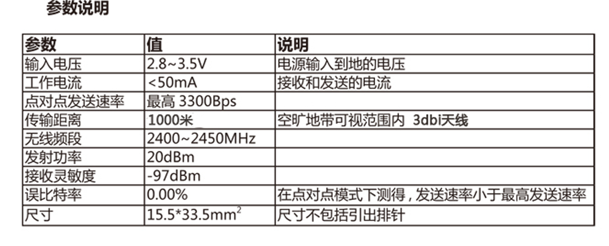

发布时间： · 博客园原文
官方说明书
  
用法
点对点通信，A端单片机串口（TX-RX，RX-TX）连着一个ZigBee模块，B端亦然。根据配置说明来配置两模块波特率和频道相同，设置模式配一个A端一个B端，再确认设置，就可以在某一端串口发送数据另一端串口接收了。
发布时间： · 博客园原文
  
点对点通信，A端单片机串口（TX-RX，RX-TX）连着一个ZigBee模块，B端亦然。根据配置说明来配置两模块波特率和频道相同，设置模式配一个A端一个B端，再确认设置，就可以在某一端串口发送数据另一端串口接收了。